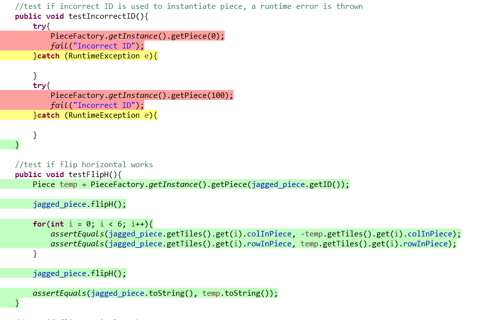

Software Engineering
The final project for Software Engineering was to create a puzzle game in java using the entity-boundary-controller (EBC) framework style from the ground up. The game consisted of moving six celled objects in similar style to tetris pieces to fill in differently shaped boards. The game application had three modes: puzzle mode (set moves and pieces), lightning mode (timed with overlap allowed), and release mode (cover certain number tiles). We also built out a level creation application. In the project we worked from use cases to generating a full class diagram and UML to coding the program and writing JUnit test cases.
One of my major responsibilities was writing test cases. I used JUnit to format the test cases and Eclemma to examine the total code coverage of the tests. The outcome of the project was a successful demo of both the game and the builder.
Test Case Coverage Example
|  |